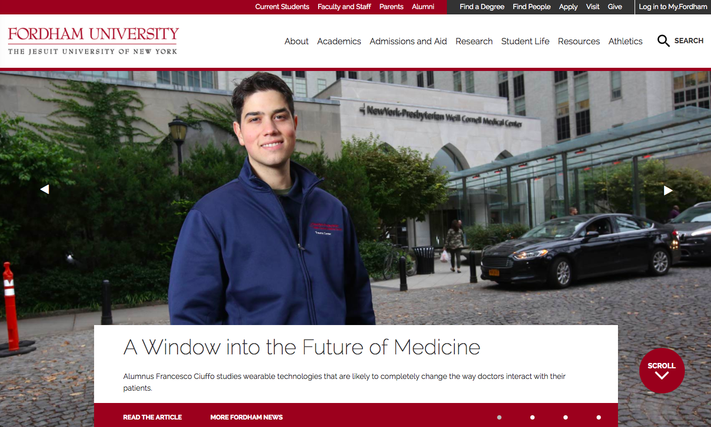
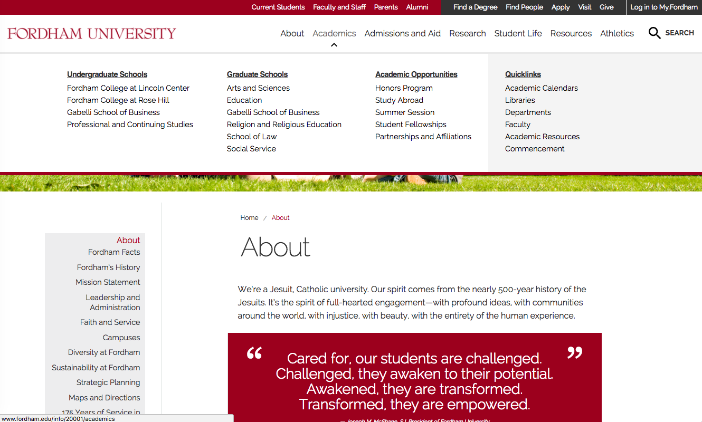
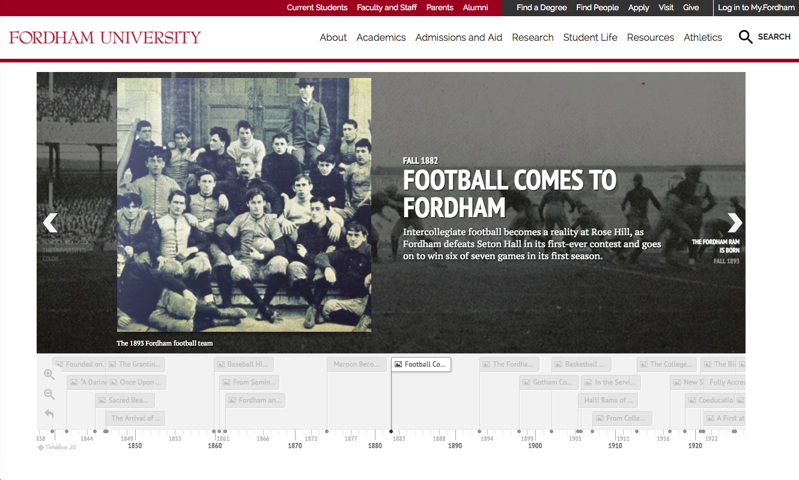
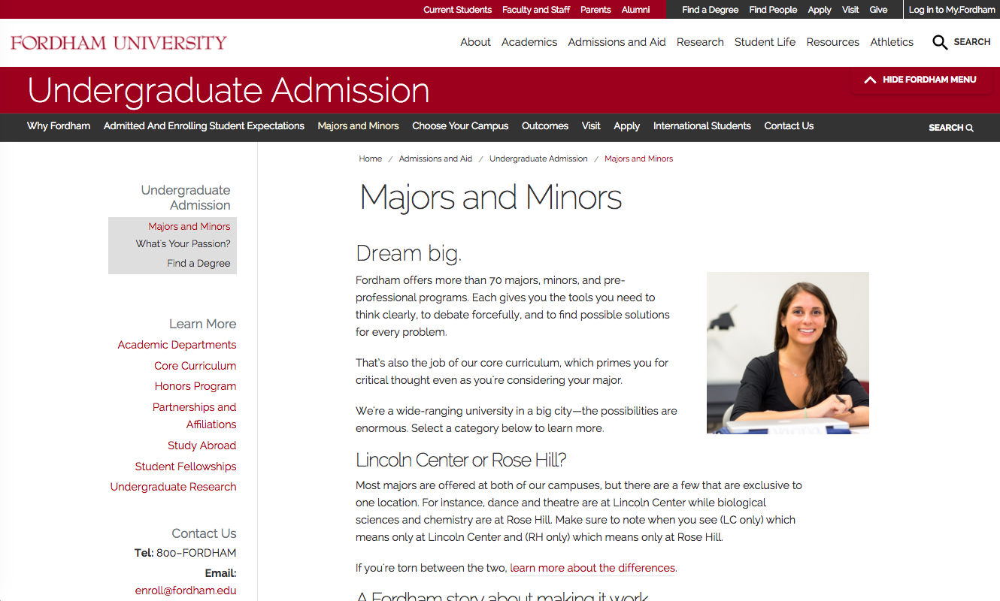

The official website for Fordham University.
In 2015, the redesign of Fordham University's official website had begun. Through detailed analysis of user flows and surveys, we realized that the website had to be redone so that users can navigate through the site much more efficiently. Seeing as how the legacy site looked and felt outdated, the university redesigned the website into more of a modern PHP driven web page. We used an external analytics site to measure how long users were on a page, where the pages were terminated, where people pressed back, etc.
As the Web Intern for the Online Communications team, I helped create IAs, create templates for homepages, document pages, profile pages, news feeds, event pages, etc. I dynamically incorporated updates into CMS so that university faculty could update their pages themselves. I also focused on making sure that all I programmed a tutorial for all new Jadu users that demo'd the entire site to a new user in a QA environment. I also created a style guide so that future interns and web engineers would easily be able to identify colors and fonts. Because we were a university, we had a very strict branding identity to stick to.
HTML, CSS, Javascript, PHP, CMS, Jadu, Adobe Photoshop and Adobe Illustrator.
We had been told by the Admissions office that more and more perspective students and families kept calling for information that was already available to them on the university website. However, many parents had said that they couldn't find the information they were looking for. Not only did we want to modernize and condense information, but make the information more easily accessible. Being a student myself, I had first hand experience with difficulties navigating the platform. I've heard things like, "I can't find the requirements for my major.", "Where's information on financial aid?", ""
This are some examples from the legacy website.
Here are some examples from our new site.
   